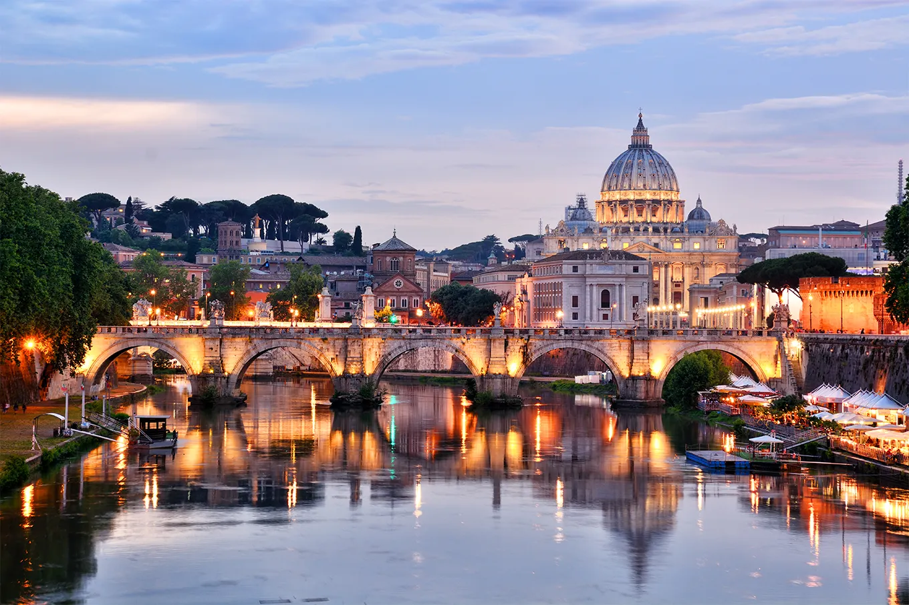

Big Ben, Inglaterra
Além de ser um dos maiores e mais sagrados sítios católicos, a basílica de São Pedro é também uma das principais atrações turísticas da Europa. Colunas de mármore, ornamentos em ouro, pinturas de anjos, estátuas, e trabalhos de importantes artistas do Renascimento, como Michelangelo e Bernini, são alguns dos atrativos da bela basílica situada na cidade-estado do Vaticano.